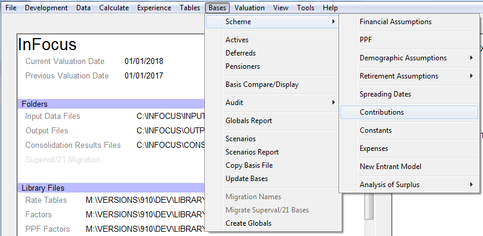

Contributions¶
SuperVal has a number of different options for setting up contribution rates for Active members. Heres how to use these different parameters.
Version
This article is based on V9.25 of SuperVal. Any screenshots from earlier versions are not materially different.
It is relevant for the Actives module only.
Defining contribution rates in the global parameters¶
V9.00 of SuperVal introduced a new approach to the contribution parameters for members, the company and the underpin. The parameters relating to the definition of a contribution structure are now entered in the Global Parameters instead of the Actives Basis File. This area is accessed from the Home Page under Bases>Scheme>Contributions.

You can either edit an existing Global Contribution definition or enter a new definition by selecting New (Defaults) from the Open> Parameter menu. This will then open the Contribution Definition screen where the contribution definition can be entered. (See screenshot below.)
There are six different ways to define contributions structures:
- Fixed percentage of salary
- Differing percentages on up to 10 salary bands
- Varying percentage of salary based on attained age
- Varying percentage of salary based on age at entry
- Varying percentage of salary based on duration from valuation date
- Salary bands table with differing percentages (GAD-specific)
The setup for each of these methods is discussed below.
Company contributions are required only if using the Analysis of Surplus module.
Fixed percentage of salary¶
If the contributions are a fixed percentage of salary then use this option.

- Contribution Rate
-
Enter the fixed rate of contribution into the Contribution Rate box. For 5% enter 5 and not 0.05.
- Contribution Cessation
-
Enter the number of years after which contributions cease. If contributions continue throughout membership enter a sufficiently large number to cover the entire service period e.g. 99. Then select from the dropdown box whether the service period will be based on Scheme Membership or Company Service.
Differing percentage on up to 10 salary bands¶
SuperVal has the option to define contribution rates that depend upon the members salary.

- Contribution Rates and Bands
-
Start by entering the contribution band structure. Right-click over the
1in the box containing Contributions and Bands to add sufficient rows for the contribution definition. You can add up to nine rows.Then select the method to use to determine contributions. The salary-related contribution scale may be applied in one of two ways. These are Progressive or Band-related. An example of the two different methods is set out below.
- Progressive
-
Under this approach, a member pays contributions at the rates specified in the table on the earnings within each salary band. For example:
Band Salary Band Contribution Rates --------------------------------------------- 1 0 12,600 5.5% 2 12,601 14,700 5.8% 3 14,701 18,900 5.9% 4 18,901 31,500 6.5% 5 31,501 42,000 6.8% 6 42,001 78,700 7.2% 7 Greater then 78,700 7.5%So a member with a salary of 100,000 would pay contributions of:
0.055 12,600 = 693.00 on Band 1 earnings 0.058 (14,700 12,600) = 121.80 on Band 2 earnings 0.059 (18,900 14,700) = 247.80 on Band 3 earnings 0.065 (31,500 18,900) = 819.00 on Band 4 earnings 0.068 (42,000 31,500) = 714.00 on Band 5 earnings 0.072 (78,700 42,000) = 2,642.40 on Band 6 earnings 0.075 (100,000 78,700) = 1,597.50 on Band 7 earnings.The total contributions payable would be 6,835.50 per year.
- Band-related
-
Under this approach, the member pays a single specified contribution rate on their entire salary. The rate paid is dependent on the Salary Band in which the members salary currently lies. Under this approach the member in the above example would pay contributions of
7.5% 100,000 = 7,500 per yeari.e. because the members salary lies in the range covered by Band 7, the Band 7 contribution rate is paid on all salary.
Finally, select from the dropdown list which of the inflation rates defined in the Global Parameters to use to inflate the Contribution Band Limits over time. If the limits on the Bands are non-increasing then select a Global Parameter with a value of 0%. The value of the Global Parameter will be shown to the right of the field.
If the increase to the Contribution Bands varies across Bands or time then consider using the Salary Bands Table with Differing Percentages methodology below.
- Contribution Cessation
-
As above, enter the number of years after which contributions cease. If contributions continue throughout membership enter a sufficiently large number to cover the entire service period e.g. 99. Then select from the dropdown box whether the service period will be based on Scheme Membership or Company Service.
Varying percentage of salary based on attained age¶
Under this option the contribution rate determined will vary according to the members current age.

- Contribution Tables
-
Double click to select the rate table that contains the contribution rates appropriate at each members age. A typical rate table would be of type
FX(butEX,GX, orHXcould all be used). Enter the values in the table as percentages i.e. for 5% the entry should be 5 and not 0.05. - Contribution Cessation
-
As above, enter the number of years after which contributions cease. If contributions continue throughout membership enter a sufficiently large number to cover the entire service period e.g. 99. Then select from the dropdown box whether the service period will be based on Scheme Membership or Company Service.
Varying percentage of salary based on age at entry¶
Under this option the contribution rate determined will vary according to the members age either at entry to Company Service or Scheme Membership.

- Contribution Tables
-
Double-click to select the rate table that contains the contribution rates appropriate at each members age. A typical rate table would be of type
FX(butEX,GX, orHXcould all be used). The values in the table should be entered as percentages i.e. for 5% the entry should be 5 and not 0.05. Then select whether the age at entry should be determined from the date of joining the company or the date of joining the scheme. - Contribution Cessation
-
As above, enter the number of years after which contributions cease. If contributions continue throughout membership enter a sufficiently large number to cover the entire service period e.g. 99. Then select from the dropdown box whether the service period will be based on Scheme Membership or Company Service.
Varying percentage of salary based on duration from valuation date¶
Under this option you can enter a varying future contribution rate as a table allowing contributions to cease when modelling cessation of future accrual.

- Contribution Tables
-
Double click to select the rate table that contains the contribution rate duration table. A typical rate table would be of type
FX(butET, FT,GT, orHTcould all be used). The values in the table should be entered as percentages i.e. for 5% the entry should be 5 and not 0.05. - Contribution Cessation
-
Enter the contribution rate in the table. To cease future contributions, amend the Contribution Rate Duration table by setting the rate to 0 after a certain number of years.
Salary bands table with differing percentages¶
Under this option the contribution rate determined will vary according to the Salary Band Table entered. This enables the user to define contribution structures where the Salary Bands (but not the contribution rates) increase at different rates over time.

- Contribution Rates and Bands
-
Start by entering the contribution band structure. Right-click over the
1in the box containing Contribution Rates to add sufficient rows for the contribution definition. You can add up to nine rows.Then select the method to be used to determine contributions. The salary related contribution table may be applied in one of two ways. These are Progressive or Band-related. An example of the two different methods is set out above in differing percentage on up to 10 salary bands. The same logic applies here.
Then select the 2D table containing the Salary Bands to be used for the calculations. The 2D table will be of a
CMtype and contain the Salary Band Limits for each year in each column. The data in the first column will be used in the year after the valuation date and should contain the Salary Band at the beginning of the year. The value entered in the field (0,0) will be used as the bottom of the first Salary Band i.e. the Salary at which contributions are first paid. The second column will contain the same data for the end of year. The Salary Band data is then geometrically averaged to get the Salary Band value at the mid-point of the year to compare with the mid-point salary.The maximum number of Salary Band Limits is ten. (This is consistent with nine salary bands.)
You can vary the number of entries for each band. However, the geometric average of the last two columns of Salary Bands data will be used for all years into the future. Hence, you must enter at least two years data.
Enter the Base Year of the Salary Band Table. This will let you use the same table at future valuation dates.
- Contribution Cessation
-
As above, enter the number of years after which contributions cease. If contributions continue throughout membership enter a sufficiently large number to cover the entire service period i.e. 99. Then select from the dropdown box whether the service period will be based on Scheme Membership or Company Service.
Additional fields in the Actives basis file¶
Some additional fields are entered on the Contributions tab found in the Actives Basis file.
Members Contribution Parameters¶
- Member Contributions Definition
-
Select one of the previously defined Contribution Definitions for members contributions.
- Member Conts Salary
-
Specify which previously defined salary definition is to be used. (The salary will have been defined on the Salaries tab.)
- Members Additional Cont Rate
-
For each of the five bases you can specify a member-specific additional contribution rate that will be valued in addition to any fixed member contributions. This will typically be held as a data item. This could be to reflect for example a members voluntary contribution rate in addition to some standard rate.
- Interest Rates to accumulate Members Contributions
-
The data format has a standard variable for the amount of the members accumulated contributions as at the valuation date, and this is called
ACW. This will be accumulated with interest and additional contributions to each future exit point. The rates of interest to be used in service and deferment can be specified here.The accumulations of a members contributions to all future exit dates are shown in the VarPrint in section 40 see below.
Company Contribution parameters¶
- Company Conts Salary
-
Unless you are defining contributions for the Analysis of Surplus module, the only entry for Company Contributions is the salary on which these are based. Select which previously defined salary definition to use. (The salary will have been defined on the Salaries tab.)
Underpin Contribution parameters¶
If you have checked the box to confirm that Benefits are underpinned, then the Underpin Contribution Parameters will be available for use.
- Underpin Contributions Definition
-
Select one of the previously defined Contribution Definitions for the Underpin.
- Underpin Contribution Salary
-
Specify which previously defined salary definition to use. (The salary will have been defined on the Salaries tab.)
- Additional Underpin Contribution Rate
-
You can specify for each of the five bases a member-specific additional contribution rate that will be valued in addition to any fixed underpin contributions. This will typically be held as a data item.
- Initial Underpin Amount
-
Enter the initial amount of the Underpin.
- Underpin Interest
-
Select from the dropdown list which previously defined interest rates to use to accumulate the Underpin.
- Underpin Commencement Date
-
Enter the date from which the Underpin applies.
How the calculations are undertaken and shown in the VarPrint¶
The accumulation of a members contributions to all future exit dates is shown in the VarPrint in section 40.
Note
A VarPrint file is produced by placing a * in the last column of the members data record and setting the Test Mode to either Limited Results or Full Results on specifying a Valuation Batch.)

The figures in the Accum Conts at LDATE are used to determine the present value of a return of contributions benefit payable on death in service or death in deferment. The figures shown in Future Element of B are used to determine the future service liability of this benefit.
Member data and salary projections¶
The following member data and assumptions have been used:
Date of Birth 1 Jan 1963
Date Joined Company 1 Jan 1987
Date Joined Scheme 1 Jan 1990
Salary 35,000
Accumulated Members Contributions at DoV 5,000
Additional Contribution Rate 5%
Date of Valuation 1 Jan 2013
Pre Retirement Interest Rate 6.25%
Post Retirement Interest Rate 5.00%
Salary Increase Rate 6.00%
Contribution Increase 2.00%
Pension Increase Rate 2.25%
Salary Band Inflation 3.00%
The Scheme provides a 1/60th benefit at a Normal Retirement Age of 65.
Contributions are paid on Contribution Salary, which is base salary with no adjustments.
The salary on which contributions are based is projected as follows:

See InFocus article: Salary Projections for more details on salary projections
Calculation of contributions over a year uses the Salary at LDATE (i.e. salary at the future exit dates). The rationale for this is that contributions are payable on average half way through the year.
Fixed percentage of salary¶
The table below shows the build up of member contributions based on a member contribution rate of 5% and an additional contribution of 5%. Members accumulated contributions at the valuation date are 5,000 and interest is applied at 2% to the contributions. The projected salary is shown above.

- Accum Conts at VDate
-
The member is age 50 nearest at the valuation date and therefore the figure shown here is the member contributions at the Valuation Date taken from the data file
ACW, i.e. 5,000.In general, the formula for calculating the accumulated members contributions figure at the anniversary of a Valuation Date is determined as follows:
(Prev. Years Accumulated Contributions) (1+Contribution Increase Rate) + (Fixed Contribution Rate + Additional Contribution Rate) Mid-year Salary (1+Contribution Increase Rate)Hence, at age 51 (nearest), the figure is calculated as:
5,000 1.02 + (5% + 5%) 36,500 1.02 = 5,100 + 3,640.87 = 8,740.87At age 52, the figure is calculated as:
8,740.87 1.02 + (5% + 5%) 38,213 1.02 = 8,915.69 + 3,859.32 = 12,775.01 - Accum Conts at LDATE
-
The accumulated contributions at
LDATE(i.e. future exit dates) are taken as the average of the previously calculated accumulated contributions at the start and at the end of the year.At age 50 = (5,000 + 8,740.87) = 6,870.44 At age 51 = (8,740.87 + 12,775.01) = 10,757.94 - Future Element of A (Accum Conts at VDate)
-
The future-service element of the Accum Conts at VDATE is calculated in the same way, only the past-service accumulation has been removed. This is therefore:
At age 50 = 0.00 At age 51 = (5% + 5%) 36,050 1.02 = 3,640.87 - Future Element of B (Accum Conts at LDATE)
-
This is the future-service element of the Accum Conts at LDATE. This will be the roll-forward of each years contributions plus half a years contributions for the year of exit. This is therefore:
At age 50 = (5% + 5%) 36,050 1.02 = 1,820.44 At age 51 = (5% + 5%) 36,050 1.02 + (5% + 5%) 38,213 1.02 = 3,677.10 + 1,929.66 = 5,606.76
Differing percentage of up to 10 salary bands¶
The table below shows the build-up of member contributions based on a contribution definition that varies with salary. The following contributions have been defined. The contributions are being determined using the Progressive method.
Salary Band Contribution Rates
-------------------------------------
Less than 5,000 0%
5,000 to 7,500 3%
Above 7,500 5%

- Accum Conts at VDate
-
The member is age 50 nearest at the valuation date and therefore the figure shown here is the member contributions from the data file
ACW, i.e. 5,000.The following year, the accumulated members contributions figure at the Valuation Date is determined using the same approach as above, but the salary bands are inflated to the mid-year point before calculation of the relevant contributions.
At age 51 (nearest), the figure is calculated as one year's additional contributions plus the accumulated contributions:
= 5,000 1.02 + [ (0% 5,000 (1 + 3%/2)) + (3% (7,5005,000) (1 + 3%/2)) + (5% (36,0507,500) (1 + 3%/2)) ] 1.02 = 5,100 + 1,512.91 = 6,612.91 (The minor difference is due to rounding.) - Accum Conts at LDATE
-
The accumulated contributions at
LDATE(i.e. future exit dates) are taken as the average of the previously calculated accumulated contributions at the start and at the end of the year.At age 50 = (5,000 + 6,612.94)/2 = 5,806.47 At age 51 = (6,612.94 + 8,358.14)/2 = 7,485.54 - Future Element of A (Accum Conts at VDate)
-
The future service element of the Accum Conts at VDATE is calculated in the same way only the past-service accumulation has been removed. This is therefore:
At age 50 = 0.00 At age 51 = [ (0% 5,000 (1+3%/2)) + (3% (7,5005,000) (1+3%/2)) + (5% (36,0507,500) (1+3%/2)) ] 1.02 = 1,512.91 - Future Element of B (Accum Conts at LDATE)
-
This is the future-service element of the Accum Conts at LDATE. This will be the roll-forward of each years contributions plus half a years contributions for the year of exit. This is therefore:
At age 50 = [ (0% 5,000 (1+3%/2)) + (3% (7,5005,000) (1+3%/2)) + (5% (36,0507,500) (1+3%/2)) ] 1.02 = 756.46 At age 51 = (756.46 2 1.02) + [ (0% 5,000 1.03 (1+3%/2)) + (3% (7,5005,000) 1.03 (1+3%/2)) + (5% (38,2137,500) 1.03 (1+3%/2)) ] 1.02 = 1,527.97 + 806.45 = 2,334.42
Contribution rate varies by age¶
The principles of the calculations above remain the same, however, this time the contribution rate will be taken from the table specified.
Contribution rate varies by age at entry¶
This is effectively a fixed type of contribution where the contribution rate is determined at either the age of entry to the company or the scheme. This will follow a similar calculation approach to the Fixed Percentage of Salary above.
Salary band tables with differing percentages¶
The image below shows the build up of member contributions based on a contribution definition that is based on salary bands that increase at different percentages. The following contributions have been defined. The contributions are being determined using the Band Related method.
| Contribution Rates (above Salary Band) |
Salary Band 0 |
Salary Band 1 |
Salary Band 2 |
Salary Band 3 |
|---|---|---|---|---|
| 5% | 5,000 | 5,125 | 5,250 | 5,500 |
| 10% | 15,000 | 15,250 | 15,500 | 15,750 |
| 15% | 25,000 | 25,500 | 26,000 | 26,500 |
| 20% | 50,000 | 51,000 | 52,000 | 53,000 |
At the first two exit point the mid-point of the Salary Bands is determined as:
| First Exit Point | Second Exit Point |
|---|---|
| (5,000 5,125) = 5,062 | (5,125 5,250) = 5,187 |
| (15,000 15,250) = 15,124 | (15,250 15,500) = 15,374 |
| (25,000 25,500) = 25,248 | (25,500 26,000) = 25,749 |
| (50,000 51,000) = 50,498 | (51,000 52,000) = 51,498 |
As the members salary is 36,050, contributions will be paid at the rate of 15% in the first year. As the members salary at the mid-point of year 2 is 38,213, contributions will be paid at the rate of 15% in the second year. When the members salary at the mid-year exit point exceeds 51,498 (the geometric average of 52,000 and 53,000) then contributions will be paid at the rate of 20%.

At the Valuation Date the members salary is 35,000. As this is between 25,000 and 50,000 and we are using the Band-related method he will initially pay contributions at the rate of 15%.
- Accum Conts at VDate
-
The member is age 50 nearest at the valuation date and therefore the figure shown here is the member contributions from the data file ACW, i.e. 5,000.
The following year, the accumulated members contributions figure at the Valuation Date is determined using the same approach as above, but the salary bands are inflated to the mid-year point before calculation of the relevant contributions.
At age 51 (nearest), the figure is calculated as one year's additional contributions plus the accumulated contributions:
= 5,000 1.02 + (15% 36,050) 1.02 = 5,100 + 5,461.31 = 10,561.31 - Accum Conts at LDATE
-
The accumulated contributions at LDATE (i.e. future exit dates) are taken as the average of the previously calculated accumulated contributions at the start and at the end of the year.
At age 50 = ( 5,000 + 10,561.31) = 7,780.66 At age 51 = (10,561.31 + 16,561.52) = 13,561.42 - Future Element of A (Accum Conts at VDate)
-
The future-service element of the Accum Conts at VDATE is calculated in the same way, only the past-service accumulation has been removed. This is therefore:
At age 50 = 0.00 At age 51 = (15% 36,050) 1.02 = 5,461.31 - Future Element of B (Accum Conts at LDATE)
-
This is the future-service element of the Accum Conts at LDATE. This will be the roll-forward of each years contributions plus half a years contributions for the year of exit. This is therefore:
At age 50 = (15% 36,050) 1.02 = 2,730.65 At age 51 = (15% 36,050) 1.02 + (15% 38,213) 1.02 = 8,410.14